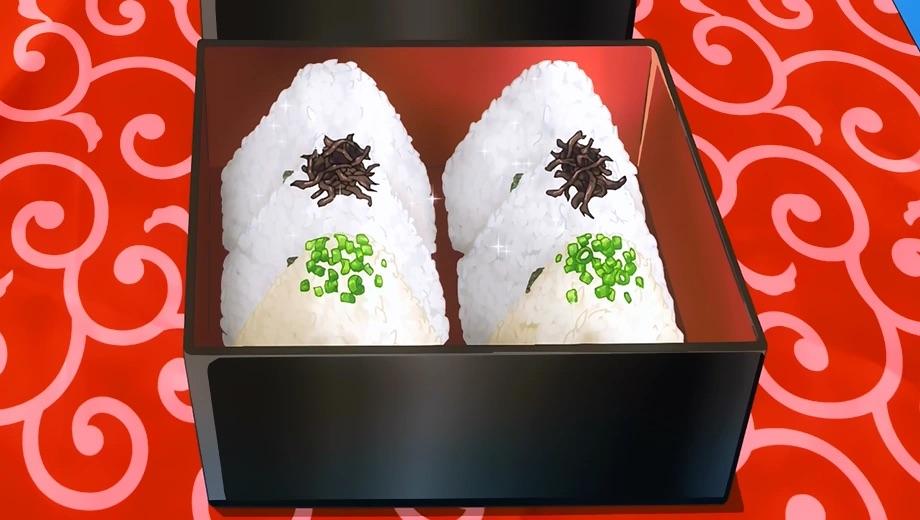

Three Kinds of Onigiri

From Episide 6. Three Kinds of Onigiri is a dish made by Megumi Tadokoro for the residents of Polar Star Dormitory.
Onigiri is Japanese food made from white rice, formed into triangular shapes, and often filled with meat or fish and wrapped in nori.
Ingredients (In addition to rice and nori)
Honey Garlic Pork Belly Filling
- Pork belly
- Garlic
- Miso
- Sake
Negishiodare Filling
- Chicken breast
- Salt
- Scallion
- Sake
- Ginger
- Chicken bouillon
- Sugar
- Sesame oil and seed powder
Shio Kombu Cheese Filling
- Sesame oil and powder
- Shio kombu (kombu simmered in soy)
- Cheese
Directions
Honey Garlic Pork Belly Onigiri
- Boil pork belly in a pot of water for 30 minutes.
- In a plastic container, mix garlic, miso, honey, and sake. Then add the cooked pork belly to the mixture and leave it over night.
- Once you take out the pork belly, cut it thinly. Wet your hands in salty water and take a bunch of rice and put the pork belly right in the middle of the rice.
- Mold it and wrap it with a nori sheet
Negishiodare Onigiri
- Finely chop the scallions. Stick the chicken breast in multiple places with a fork.
- Rub salt, pepper, and sake into the chicken breast. Cut chicken into small pieces and add to a bowl
- Add the scallion, grated ginger, chicken bouillon, sugar, sesame oil, sake, and white sesame seed powder to the chicken.
- Cook the chicken in a hot skillet until it is fully cooked. Then set it aside to let it cool
- Wet your hands, then grab some rice and put the chicken in the middle of it, mold it, then wrap it with a nori sheet.
Shio Kombu Cheese Onigiri
- Cut cheese into small cubes and mix it with white sesame seed powder, sesame seed oil, and minced shio kombu.
- Wet your hands, take a bunch of rice, put the mixture inside, and mold it. Then wrap it in a nori sheet.